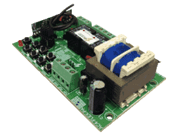
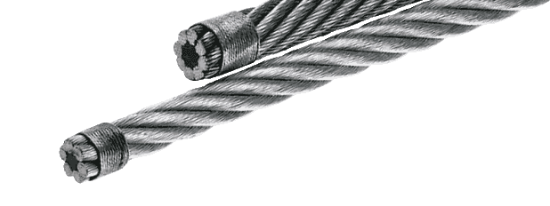

Seu portão quebrou está precisando de um profissional para conserta-lo ?
Você está no lugar certo, meu nome é Mauricio trabalho nesta profissão desde sou capaz de resolver qualquer problema com seu portão pois sou experiente no assunto, forneço novas peças para seu portão e serviços de ótima de qualidade, tudo isso por preços justo, irei atende-lo da melhor maneira possível tanto pessoa física e jurídica.
Contato e Orçamentos
Faça já seu orçamento comigo, no site tem todos os meus contatos para você fazer o orçamento, escolha a melhor maneira que você achar melhor é só clicar e ver, conte comigo eu garanto.
Atendimento e Horários
Atendo de segunda e sexta e feriados das 7:00 as 18:00 e a os sábados até as 21:00 em toda região de São Paulo.
Serviços Prestados
- ☑Reformo e modifico o motor do seu portão eletrônico.
- ☑Faço pequenos reparos (solda) em seu portão eletrônico.
- ☑Instalo motores para portões (novos).
- ☑Instalo travas eletromagnéticas.
- ☑Faço instalação de fotocélulas.
- ☑Protetores de rede para portão automático.
- ☑Central eletrônica para portão automático.
- ☑Ajustes e lubrificação e reparo em portões eletrônicos.
- ☑Troco o capacitor do portão automático.
- ☑Troco a roldana do portão automático.
- ☑Troco a porca acionadora do motor do portão.
- ☑Troco o cabo de aço do portão automático.
- ☑Troco afiação elétrica do portão.
- ☑Troco a central para portões automáticos.
- ☑Troco o receptor do portão eletrônico.
- ☑Troco o motor do portão automático.
- ☑Troco a placa do motor.
- ☑Troco do controle do portão.
- ☑Troco o trilho do portão.
- ☑Conserto portão de todas as marcas.
- ☑Conserto de motores de portões basculantes.
- ☑Conserto de motores de portões deslizantes.
- ☑Conserto de motores de portões pivotante.
- ☑Conserto de caixa redutora de motores de portões.
A MANUTENÇÃO
As manutenções preventivas garantem a durabilidade, segurança e o bom funcionamento do
conjunto dos sistemas de abertura e fechamento.
Para isso, a manutenção preventiva de portões automáticos conta com a revisão ou troca dos
seguintes componentes.
Lubrificação do Sistema de Articulação dos Braços de Sustentação do Portão Automático.
Roldanas de guia dos cabos de aço e pinos de rolete do portão automático.
Lubrificação das guias do portão automático.
O PORTÃO
Se o problema do seu portão for no motor, não se preocupe! Trocamos e recuperamos motores de todas as marcas, de portões deslizantes e pivotantes.
O CONTROLE
Se o seu controle sumiu, molhou ou quebrou. Vendemos e codificamos controles para portões automáticos em qualquer região de São Paulo.
A ENGRENAGEM
As engrenagens são um dos pontos mais frágeis dos portões, principalmente as feitas de plástico. Trocamos os jogos de engrenagens, pinhão e rosca sem fim.
A CENTRAL ELETRÔNICA
Variações na rede elétrica, chuva, ou o próprio tempo podem danificar a central eletrônica do portão. Trocamos a sua central por uma nova!
O CABO DE AÇO
Alguns portões utilizam o sistema de contra peso para abertura. Trocamos e regulamos os cabos de aço para que o portão funcione perfeitamente!
Gostou está esperando o que ?
Me ligue e faça um orçamento comigo, marque um horário para eu fazer uma visita em seu local e solucionar seu problema, espero por você em.
| (11) 96244-9942 | |
| (11) 99767-7247 | |
| (11) 96244-9942 |